Ishmael is sinner #8 within the LCB, with an official color of "Isolate Orange" (#ff9500). Her literary source is Moby Dick, with its other official name being The Whale; "The Whale" being the focus of Ishmael's Canto, which is known as "The Evil Defining".
If you please, call me Ishmael.
Canto V: Ishmael and the Pallid Whale
Introduction

Moby Dick
Moby Dick, written by Herman Melville in 1851, is a novel describing the tale of Ahab as he hunts for the Moby Dick, which is a sperm whale that took his leg in a previous voyage. It is narrated by Ishmael, a sailor of the ship Pequod, as they utilize a liteny of literary genres to describe their adventures. Before giving the synopsis of the novel, it is worth mentioning that the genders of the characters are changed around in Limbus Company, which contrasts Wuthering Heights, and mirrors for Don Quixote, interpretations.
The novel begins with Ishmael joining the fateful whaling voyage as a "green hand", which just means someone who is inexperienced with whaling. He meets with Queequeg, a harpooner, at an inn before attending a sermon and signing onto the Pequod. While onboarding, Captain Ahab is described to be a "grand, ungodly, god-like man" who still has his "humanities". Additionally, a man named Elijah prophesises that a dire fate will meet Ahab if Ishmael and Queequeg join.
To break from the synopsis for a second, this introduction already brings a few important themes within Moby Dick, which are religion, Captain Ahab's charms, and prophesies.
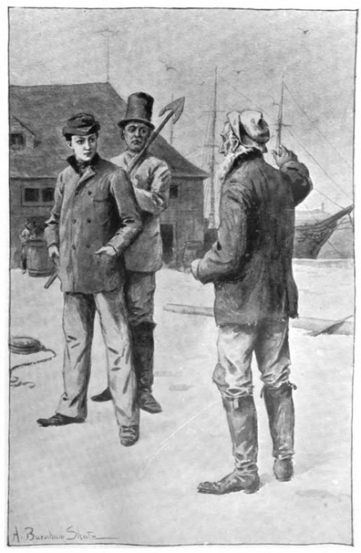
Once Ishmael boards, he makes a note of introducing the crew and discussing cetology, which is his classification of whales. In short, he classifies them into 3 "books" based on their size, which, in decreasing order of size, are: Folio, Octavo and Duodecimo. Each species is then categorized as a chapter in these books. Notably, the chapters discussed mostly encompass whales hunted for their oil, which reflects the priorities of the whalers. To conclude the sequence, Ahab makes an appearance on the quarterdeck with a prosthetic leg fashioned out of a whale's jawbone; he offers a cash reward for anyone who finds the Moby Dick first, and his fanatism captivates Ishmael. Additionally, after a confrontation with first mate Starbuck, where Ahab advances on him until he retreats, Starbuck notes how he had a dream of Ahab kicking him. Flask, an old merman, mentions the futility of struggling against Ahab and suggests that it may even be an honor to be kicked by such a man
. These two properties of Ahab will prove to be significant later.
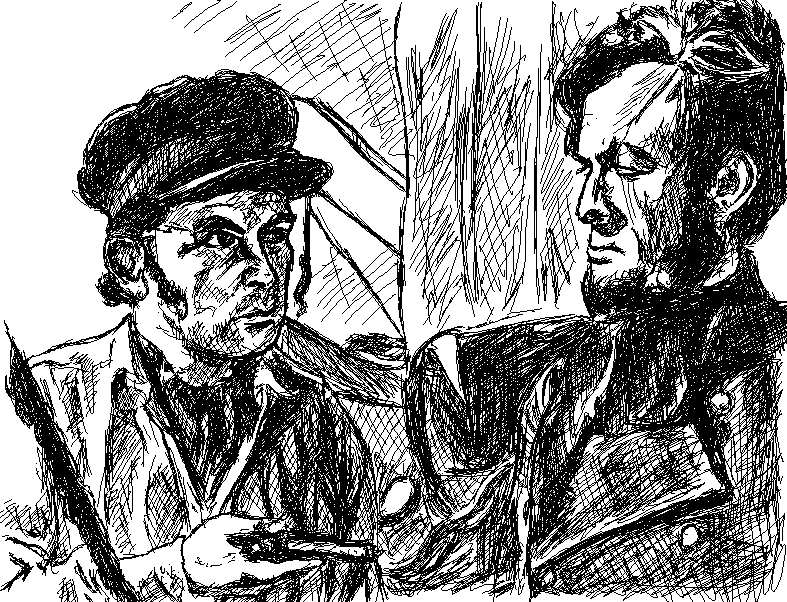
Before the crew set sail, Ahab makes a point of stirring the crew by asking simple questions, to which they respond feverently. Eventually, when Starbuck asked if they are hunting the Moby Dick, Captain Ahab confirms his suspicions, and the rest of the crew cheers wildly. Notably, Starbuck pushes back because he does not wish to risk his life for a vengence. However, he is disregarded, and Ahab "binds" the crew by having them drink from a single flagon being passed around. He ends this sequence with the quote, God hunt us all, if we do not hunt Moby Dick to his death!
(Chapter 36). The religious theming and fanatism of Captain Ahab can be seen in full display at this point.
The Pequod sails on and exchanges greetings with other whaling ships. Of note, Town-Ho gives a cryptic story of divine judgement regarding the Moby Dick. The Pequod also spot a sperm and a right whale, who are killed and harvested. Notably, as Ishmael skins the whales of their blubber, he is tied to Queequeg on a monkey-rope. Ishmael notes that, if either of them were to fall, then the other would follow suit, and remarks that this emobdies the ties that bind all men together.
It should be noted that by this point, Ishmael and Queequeg are remarked to be incredibly close, going so far to be called "married" at points.
A few other incidents occur from the harvesting process, as Tashtego nearly drowns when retrieving spermaceti, which is the raw material used to make whale oil. Pip, a young cabin boy conscripted to aid in the whaling process, leaps from the boat twice due to being scared by the whales, and was almost abandoned the second time; his delayed rescue made him go insane, which Ishmael considers to bestow the wisdom of the seas unto him.
The Pequod continues sailing, hunting whales and communicating with other ships in pursuit of the Moby Dick.
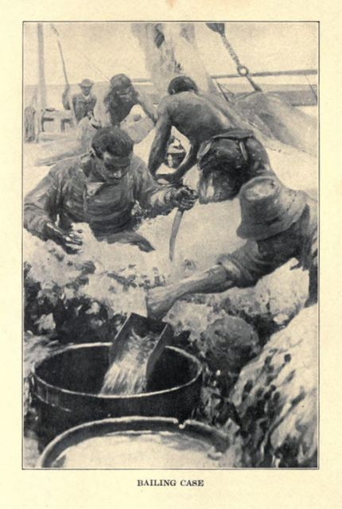
Eventually, Queequeg falls ill, and asks for a coffin to be made with his harpoon, idol and other possesions to be made, as he does not want to be buried in his hammock. However, he recovers, and begins to copy his tattoos onto the coffin while using it as a form of storage.
At this stage, Ahab also makes a new harpoon for himself, and tempers it with the blood of the 3 harpooners on deck as opposed to water.
A few days after, Fedellah notes a prophecy in 3 parts. First, before Ahab can die, he will see two hearses (a hearse being a vehicle for transporting the deceased to a funeral), with one not being made by mortal hands, and the other made of wood from America. Second, Fedellah will die before Ahab, and Ahab will only be killed by hemp. Ahab dismisses the prophecy because of how inprobable it sounds at sea.
The Pequod is soon caught in a typhoon, and flames appear at the top of the mast, and on Ahab's harpoon. While Starbuck considers it to be an omen of God opposing Ahab, Ahab considers it to be a sign of endorsement.
Once the storm settles, its noted that none of the original navigational tools remain, and only Ahab's word is left. His pride leads to him trying to create his own set of navigational tools, but otherwise his power over the crew only contains to grow. While Ahab has a rare moment of lucidity in questioning his hunt for the whale, he doubles down on it by stating that fate compels him to complete the hunt.
Finally, the Moby Dick is sighted. The Whale is spotted by Ahab, who claims the cash reward of a doubloon, however it also splits his own boat in half upon surfacing. This doesn't deter Ahab, as he calls for its continued chase for the next two days despite the whale continuing to destroy harpooning boats and killing members of the Pequod. Of note, Fedellah is killed by Ahab's own line, and by the third day, Ahab sees his body being carried by the whale. Notably this is one of the two hearses' mentioned, and the second part of the prophecy fulfilled.
At last, the Pequod is smashed by the whale, and the Pequod becomes the hearse made of American wood. Ahab tries to kill the whale before his death comes to fruition, however he is caught around the neck by a flying line, and is dragged under the sea to drown, thus being killed by hemp.
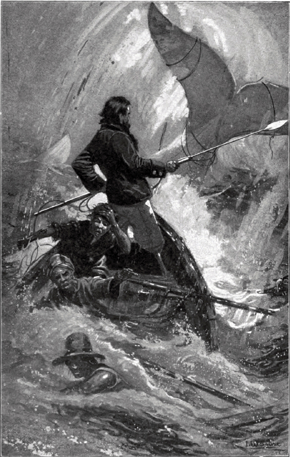
Once all is said and done, Ishmael is the only survivor of the Pequod, as he was thrown out when Ahab's harpoon boat was capsized, and then was able to utilize Queequeg's coffin as a life buoy before being rescued.
Synopsis of Canto V
The background to Canto V follows many of the same plot beats as Moby Dick, albeit with a few differences due to the setting of The City.
- "The Whale" in Moby Dick is known as the "All-Consuming Pallid Whale", or the Pallid Whale, in Limbus Company.
- While similarly a white whale, it also carries the power to pallidify everything it eats, which causes living creatures to be coated in a membrane with red/blue veins. These creatures also become aggressive to anything that is not pallidified
- Pallidification can be survived through having a strong enough obsession or desire, similar to the way distortions can be converted into effloresced E.G.O with a strong enough will to deny succuming to the heightened feelings of distorting.
- Queequeg, Ahab and Ishmael are all female in Limbus Company, as opposed to being male in Moby Dick. While I do not see any particularly interesting theming with Ahab that would change with her being female, Queequeg and Ishmael are just as close to each other in Limbus Company as they were in Moby Dick
- An interpretation of their relationship would be to consider it in a queer lens, where they both are gay. The allusions to them being "married" in Moby Dick, especially given the time period it was written in, would strongly suggest that they were more than just close friends. To this end, writing Ishmael and Queequeg as two women who are very likely lesbians is a well made decision to preserve this quality of the characters.
- Other pieces of supporting evidence for this theory is that Ishmael's headband is made out of the rope that Queequeg made for her, and this memento is a recurring motif in all of her mirror world identities.
- Additionally, within the Right Heart Atrium node of the final dungeon, a memory surfaces where Ishmael and Queequeg discuss breaking out of their cocoons, their past, together once they finish their hunt. This further alludes to their closeness, especially as the future was as fleeting as it is non existent in the city.
- Queequeg builds her coffin because she does not want her body to be damaged by the mermaids and the whales of the sea.
- Queequeg's physical build is very similar to her counterpart in the novel, as she is adorned with tattoos that is inspired by Mãori culture. In the context of Limbus Company, Queequeg is an ex-member of the Middle, which is one of the 5 most powerful crime syndicates in the city. They place an exceptional emphasis on loyalty and familial relationships, and as such, leaving the syndicate is considered to be treason punishable by death. Queequeg cuts up her body and mind in an effort to remove all traces of belonging to the middle as a result.
- Ishmael replaces Tashtego for nearly drowning when trying to harvest a whale, only to be rescued by Queequeg.
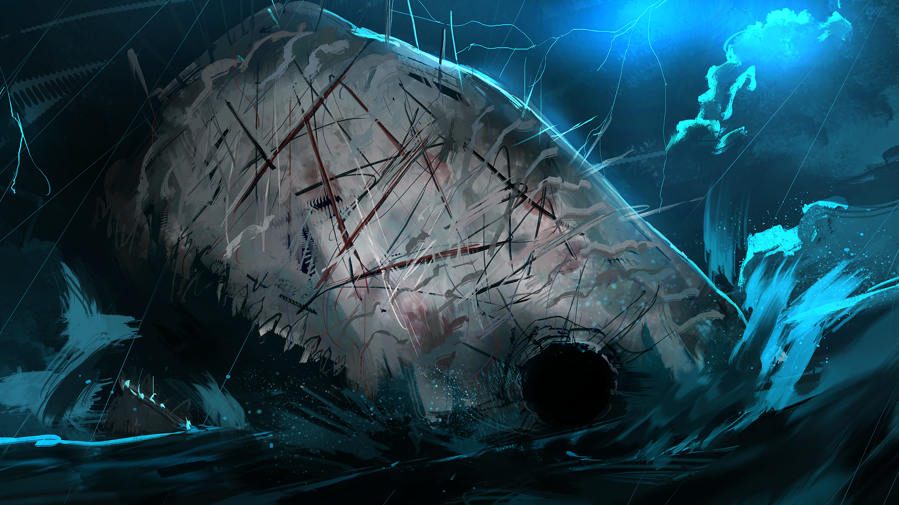
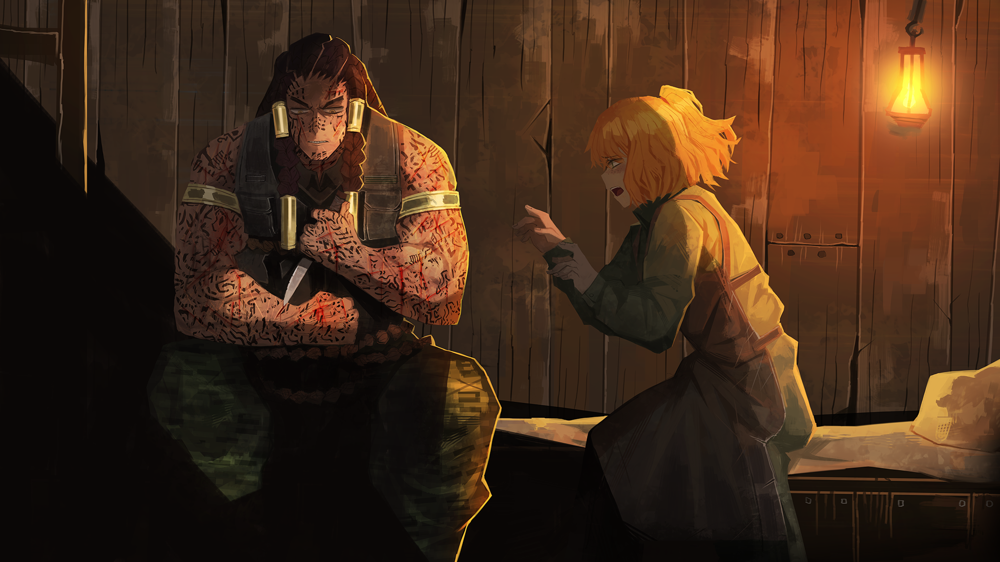
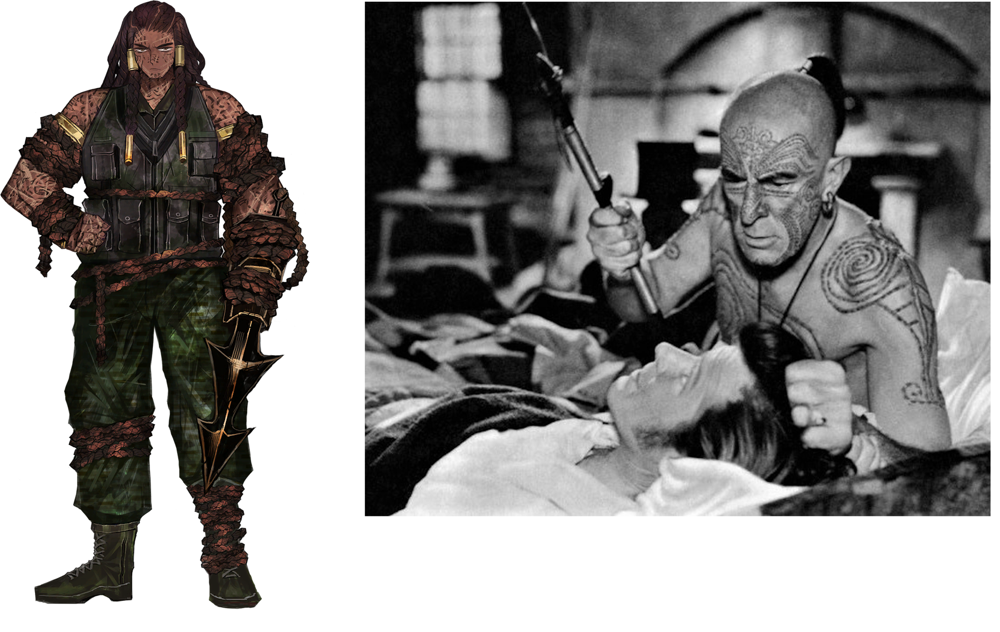
The main plot of Canto V follows Ishmael as she returns to the great lakes. The first two acts follow the sinners as they find and enter the Pallid Whale in order to get closer to the golden bough, which it had consumed. The last act sees Ishmael reuinite with the crew of the Pequod, although they are not pallidified. The only reason they haven't completely lost their mind is due to Ahab's obsession with finally killing the Pallid Whale, although they need the help of the sinners to complete the kill due to the pallidification disabling their ability to enter the whale's heart.
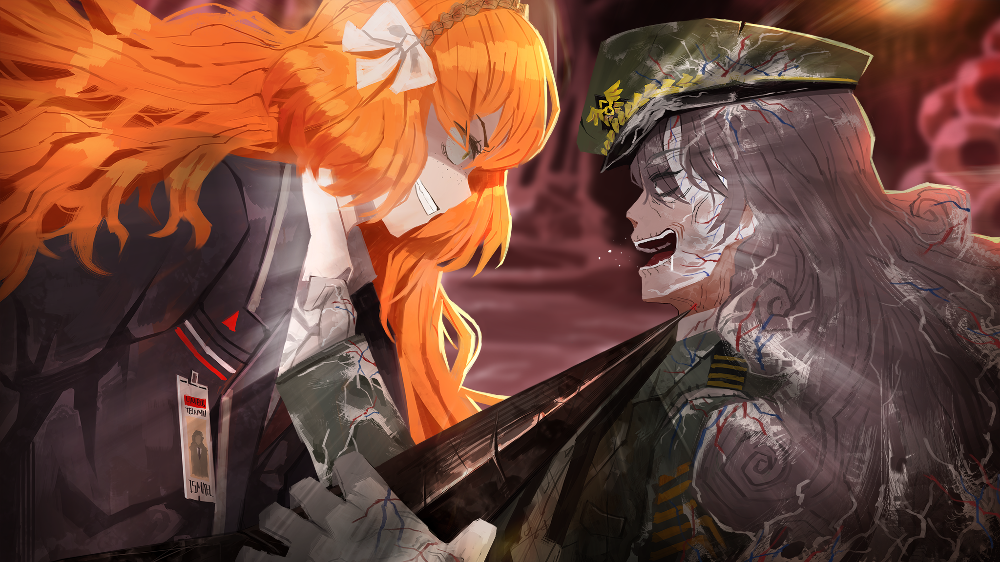
While Ishmael is obsessed with the thought of finally killing Ahab for willingly destroying the Pequod for her vengence, she begrudgingly joins forces with Ahab to kill the whale, with the promise that she gets to kill Ahab once the dust settles. However, when the party reaches the whale's heart, Ahab turns on the sinners by revealing that she wants to undo her pallidification with the golden bough in Dante's head.
Once Ahab, Queequeg and Starbuck are defeated initially, Ahab begins to distort, but rejects the alluring voice and gains her own effloresced E.G.O known as GasHarpoon. This E.G.O allows her to consume the rest of the crew in Starbuck, Queequeg and Pip in order to boost her own combat capabilities.
While Ishmael is able to defeat Ahab, Queequeg completely pallidifies, and Ishmael begins to lose her direction, which in turn causes her to almost pallidify. However, Dante and the sinners are able to pull her back from completely losing herself, and Dante was even able to convince Ishmael to kill the whale instead of Ahab in order to rob Ahab of her prize. Ishmael also opts to spare Ahab at the end, as a way of forcing Ahab to live with her own failures as a captain now that her kill has been stolen. The canto ends with Ishmael staying with the LCB until their journey ends, at which point she can go on her own adventures now that she has a purpose past revenge.
Thematic Differences
There is so much to unpack with Canto 5 that it is difficult to even begin. So the main focus of this section will be looking at Queequeg, Captain Ahab, and Ishmael.
Queequeg
Queequeg provides an interesting subversion on her literary counterpart. Queequeg in Moby Dick was interested in "visiting Christendom", although he maintains practicing a pagan religion. This is the closest similarity I could think of for Queequeg's association with the Middle, as Queequeg wanted out of the Middle in order to escape the perpetual violence that the syndicate expected. In short, in Moby Dick Queequeg does not seem to board the ship for any reason beyond personal curiosity, while Limbus Company sees Queequeg board the Pequod in order to escape her past.
Additionally, the coffin Queequeg constructs differs in motivation. In the book, he believed he would die at that moment, and wanted a different burial method. In the game, she built it so that her body would not be defiled by the Whales and Mermaids of the Great Lakes. While subtle, it showcases the difference in perspective the two characters have, as Queequeg in Limbus Company wants to maintain control over her life through her own means, even if it entails having to be on the run from the Middle. Queequeg in Moby Dick on the other hand seems to make these decisions on the basis of personal autonomy and preference, without any notable reason to do so beyond his own taste.
The distinction between the two perspectives can then be extended to reflect on their attitudes towards the hunt for the whale, and the Pequod. Both sailors are incredibly competent, but as far as I can tell, only Limbus Company's version of Queequeg feels trapped to the Pequod, as otherwise her past would catch up rather quickly. Thus, despite taking whatever measures she could to sabotage Captain Ahab's plan to reach the whale's heart, she submits to allying with Captain Ahab in the penultimate fight. Additionally, she admits that her biggest regret was that she wasn't thinking for herself, and blindly followed Captain Ahab's vision for hunting the pallid whale. While I wasn't able to find any information on Queequeg's thoughts from Moby Dick, its possible that he never had the opportunity to reflect on the blind loyalty that everyone but Starbuck had towards Captain Ahab.
Captain Ahab
Captain Ahab in the game maintains many of the same mannerisms as Ahab does in the source material. They are both prideful creatures who believe themselves to be the chosen one who will finally kill their whale. Both characters also feel little to no remorse whenever a crew member dies in pursuit of the whale, as they find their death a valiant sacrifice in their eventual success story. Compounding on that, they do not offer any sympathy to anyone not directly supporting their cause, as Ahab in Moby Dick refused to interact with ships that had no information about the whale, and Ahab in Limbus Company sacrificed Stubb when he was pallidifying because his only use was to direct them to the Pallid Whale.
However, a key difference between the two people is that Ahab "survives" the destruction of the Pequod in Limbus Company. There was also no prophecies made about the fate of the Pequod in Limbus Company, as Moby Dick had prophesized the end of the Pequod and the death of Captain Ahab. Additionally, Ahab in the game never doubted herself, and went as far as blaming Ishmael for being the reason that the hunt for the Pallid Whale failed; her pride also benefited her to gain her own effloresced E.G.O as she easily refuted the voice trying to get her to sink into her feelings of defeat.
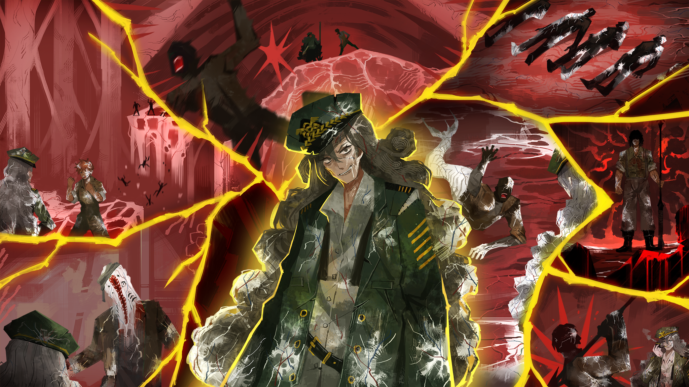
While Ahab does survive the end of Canto V, she does maintain her obsession with killing the Pallid Whale. This is achieved through the leader of the antagonists, Hermann, offering her the ability to kill an infinite amount of Pallid Whales across every mirror dimension, with payment only being that Ahab helps them retrieve more golden boughs. This provides an interesting insight into the hypothetical of Ahab surviving the encounter with the White Whale in Moby Dick, as its very likely he would either become a husk of a man, or find a new White Whale to persue.
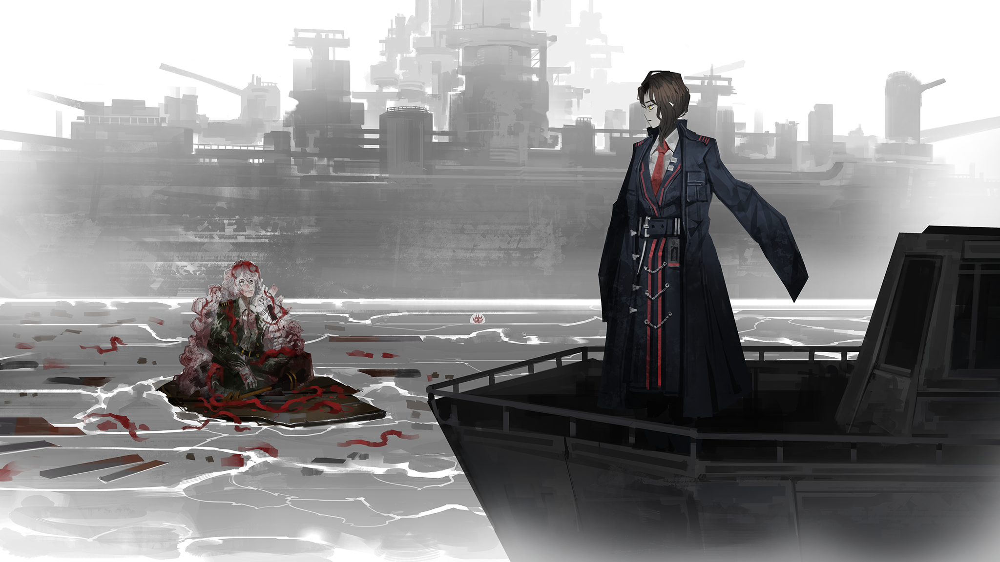
Another key difference between the two sources is that Ahab blames the Pallid Whale for everything that is wrong with the City, while the White Whale was only hunted for personal revenge. While both instances of Ahab play into the theme of mindlessly hunting the whale for revenge, the Limbus Company version of her brings a more broad reason that she rallies behind when rousing the crew of the Pequod.
Ishmael
Ishmael is particularly interesting because she is almost a completely different character from her source. Prior to the Pequod being annhilated, Ishmael was knowledgable, but wasn't too keen on maintaining her own version of cetology like her counterpart in Moby Dick. However, prior to the Pequod, Ishmael was just directionless, and in the start of the Canto, this trait is replaced with an unbridled form of anxiety due to her lack of faith in the party surviving the tribulations of the Great Lakes.
While both versions of Ishmael were very close to their versions of Queequeg, it should be noted that Ishmael in Limbus Company makes more explicit mention of wanting to be with Queequeg after everything concludes, and Queequeg pallidifying is the catalyst for Ishmael almost pallidifying herself. Thus their relationship is more explicitly expressed in Limbus Company as opposed to Moby Dick referring to their relationship in a more metaphorical or analogous manner. It should bear mentioning again that Ishmael held onto a memento of Queequeg in the game, but the book makes no mention of such an artifact.
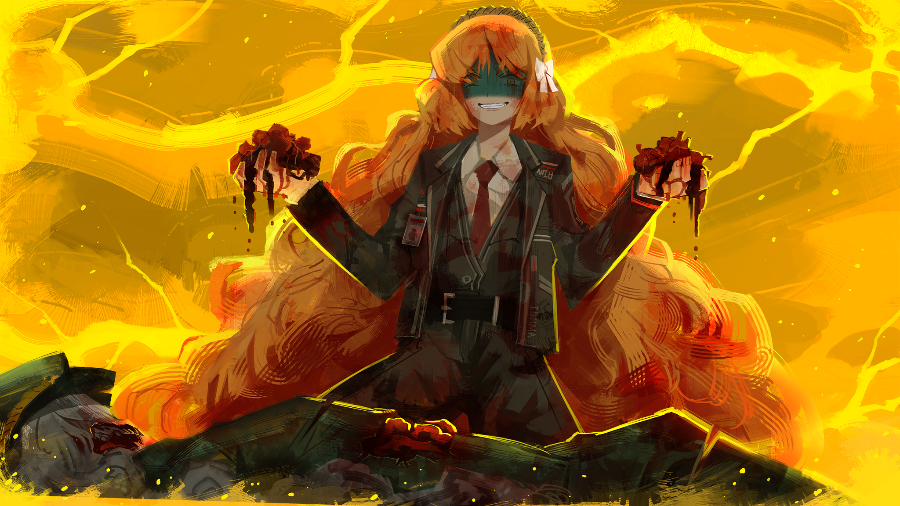
Ishmael does get wrapped up in Ahab's fanatism in both sources though, as they idolize their captain to the point of wanting to be just like them. While the epilogue of Moby Dick does not mention Ishmael's perspective of Captain Ahab, and how he feels about him, Limbus Company quickly establishes how Ishmael's only reason for living to that point was to kill Ahab in order to avenge the Pequod. Since the book version of Ishmael doesn't mention carrying any ill will to Captain Ahab, this could be another difference between the two sources.
The end of the Canto does provide insight into the perspective Ishmael may have had in Moby Dick if he still respected Captain Ahab, as in the game, Ishmael now vows to chart her own path through life instead of blindly following someone else.
Conclusions
Canto V presents a very interesting perspective on how the themes of the source can be further elaborated on through a "sequel" of sorts. By having Ishmael's backstory mirror the plot progression of Moby Dick, the writers are able to provide subversions on the themes of fanatism, pride and hopelessness by highlighting the concessions Ishmael had to make in order to find her peace and purpose in the City.